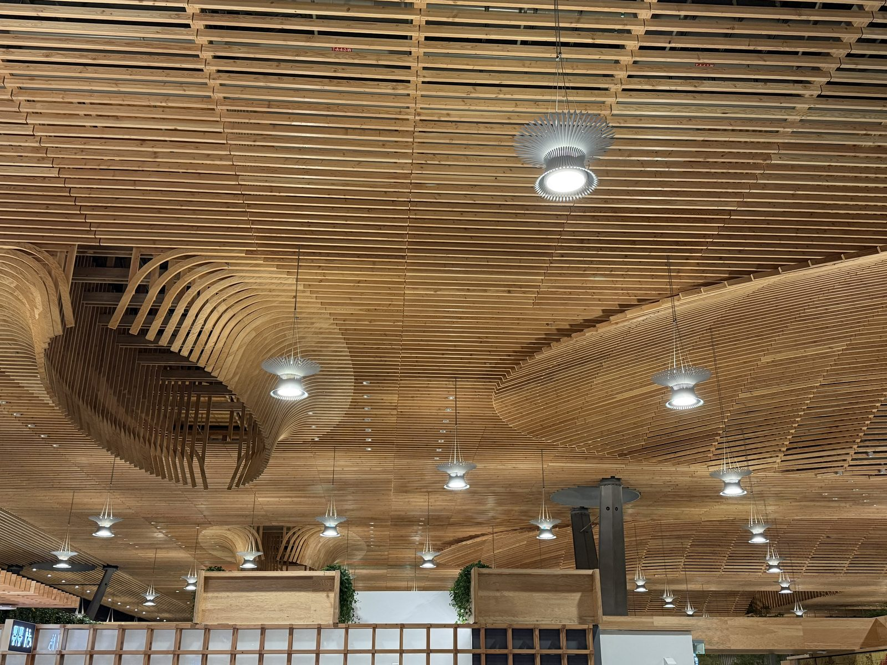
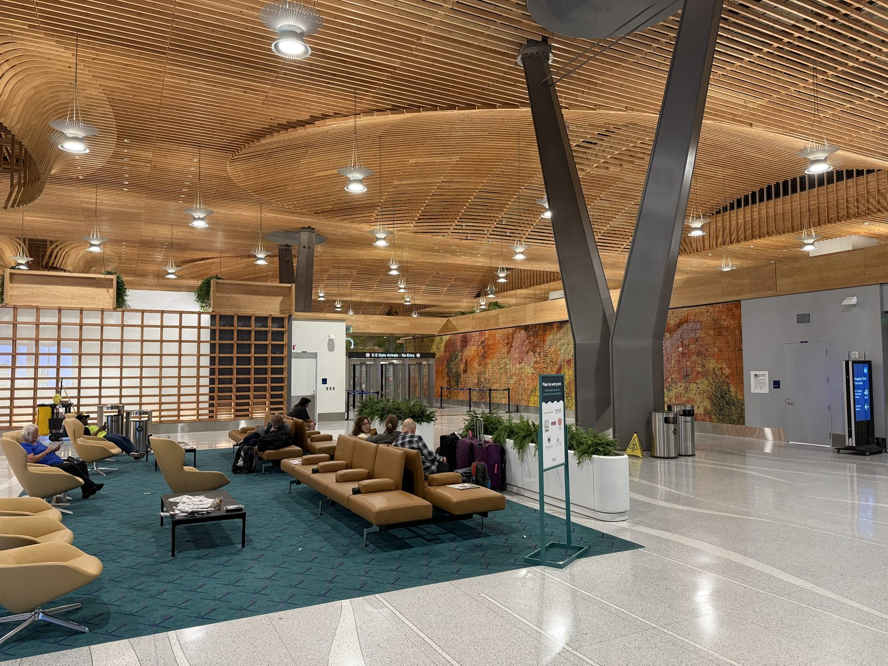
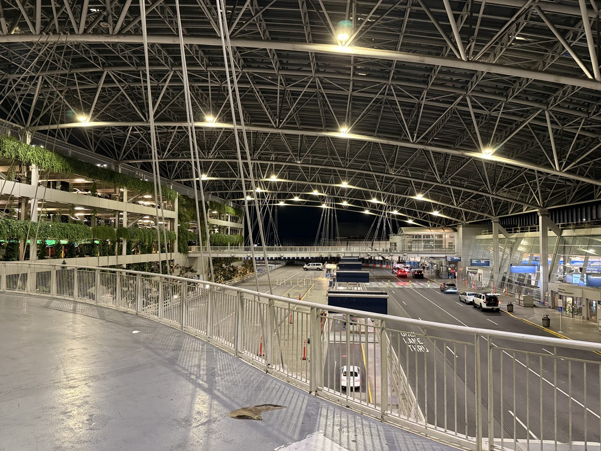
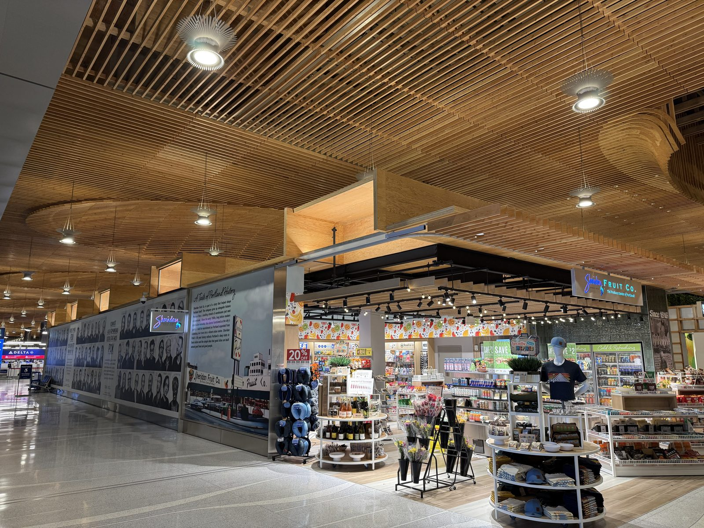

Is PDX the World's Most Beautiful Airport?

Coming through Portland International Airport just after 1am, the terminal nearly empty, I looked up and stopped walking. The ceiling overhead isn't drop tile or painted steel — it's wood, slatted and curved into something closer to a wave than a roof, running the whole length of the building. I've flown through a lot of airports. I don't think I've ever stopped to photograph one before.
Is PDX really the world's most beautiful airport?
That's not just a traveler's opinion — PDX's new main terminal won the Prix Versailles award for World's Most Beautiful Airport after it opened in 2024, on top of a Fast Company Best Design in North America citation and a #2 finish in Travel + Leisure's World's Best Awards. Airports don't usually collect design prizes. This one has a shelf of them, and having stood under the thing at one in the morning, I'm not arguing.
Why does the ceiling look like that?
The roof over PDX's main terminal is the largest mass-timber structure of its kind at any airport in the world — about nine acres and roughly 400,000 square feet of it, built from 3.5 million board feet of wood: mass plywood panels forming the roof deck, glue-laminated beams for the long spans, and thousands of 3-by-6-foot timbers woven into the lattice overhead that actually catches the eye. It peaks around 54 feet up. Forty-nine skylights of different shapes are cut into it, filtering daylight through the lattice by day and lit from below by custom sunburst-shaped pendants by night — the ones in the photo above.
The wave pattern isn't decoration for its own sake. The architects (ZGF, the Portland firm behind the redesign) modeled the lattice on regional basket-weaving traditions, and the same slatted structure that makes the ceiling interesting to look at also functions as an acoustic absorber — airport terminals are loud, cavernous rooms by default, and a coffered wood ceiling breaks that up instead of bouncing it back down at you. The wood itself was sourced within 300 miles of the airport, which given Oregon's timber economy is a genuinely local building material rather than a marketing line. And because Portland sits on the Cascadia Subduction Zone, the whole roof rides on Y-shaped columns set on seismic isolation bearings, engineered to move independently of the terminal floor in a magnitude-9 earthquake rather than come down on top of it.


The airport almost wasn't here
PDX sits on ground that had to be built before it could be flown on. Portland's first real airport was on Swan Island, dedicated by Charles Lindbergh himself in 1927 — but by the mid-1930s the Port of Portland could see it was already too small, with no room to expand for the larger aircraft coming into use. In 1936 the city bought 700 acres of marshy drainage-district land along the Columbia River, bordered by the river on one side and the Columbia Slough on the other. It took 4 million cubic yards of dredged fill, partly funded by a $1.3 million Works Progress Administration grant, to turn that floodplain into something an airplane could land on. Portland-Columbia Airport opened October 13, 1940. It was renamed Portland International Airport in 1951, and its code — PDX — is simply the old National Weather Service station identifier "PD" for Portland with an X tacked on, the same postwar fix that gave Los Angeles LAX and Phoenix PHX once the country ran out of two-letter codes.
Even the shops have Portland roots
Past baggage claim, under the same wood ceiling, there's a small grocery stand called Sheridan Fruit Co., its wall papered with a mural on Portland produce history. It's not a franchise dressed up in local branding — Sheridan Fruit really did start as an open-air produce market on Union Avenue in 1916, and the family that bought it in 1946 ran it as a Portland institution for 110 years. The flagship warehouse store in southeast Portland closed for good in February of this year. The name is still lit up in the terminal, which is either a nice piece of continuity or a small irony depending on how you want to read it.

Practical: where to actually see it
None of this needs a boarding pass. The wood ceiling runs over the whole landside terminal — ticketing, baggage claim, the skybridges out to the parking garage — so anyone picking someone up or dropping them off walks straight under the best of it. The tightest, most photogenic curve of the lattice is over the baggage claim hall near the D/E gate arrivals doors; the living wall runs the length of the pedestrian skybridge connecting the terminal to the short-term garage. Go at night if you can. The skylights that do the daytime work go dark, and the sunburst pendants take over, which is when the whole roof looks less like an airport and more like something you'd find deep in a Douglas fir forest, wired for electricity.